بقلم إسماعيل فايد
يبدو من الوهلة الأولى، بعد التجول في الدور الأسفل لمعرض صالون الشباب الذي أقيم بمركز قصر الفنون في دار الأوبرا المصرية بالقاهرة، أن المعرض عبارة عن علاقة عاطفية انتهت، وأن الأعمال الفنية ما هي إلا نتاج ذلك الانفصال أو نهاية تلك العلاقة.
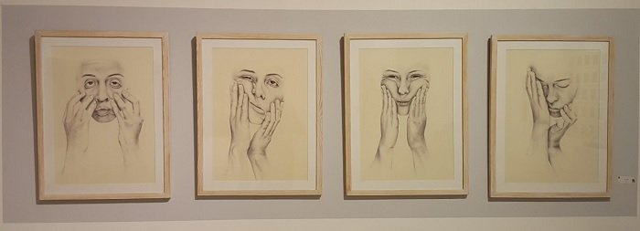
من الصالون الـ29 للشباب - الصورة: إسماعيل فايد
ما إن تخطو بضع خطوات في بهو القاعة حتى يستقبلك تجهيز محمد عيد أحمد، بموسيقاه الحزينة التي تتكرر بشكل مستمر، وترى «المرجيحة» ذات السيقان المعلقة، ووراءها جدار تختبئ خلفه أعمال فنية أكثر طفولية وسذاجة، تثير خليطًا غربيًا من مشاعر الارتياب والدهشة.
ماذا تعني «المرجيحة»؟ وماذا يمكن أن تعنيه تلك الطريقة الطفولية في الرسم؟ لا يوجد أي معلومات عن الفنان أو العمل أو حتى اسم العمل، باستثناء أعمال قليلة في المعرض، وتبقى الأغلبية الكاسحة دون عنوان أو شرح، ولو بسيط، عن ماهية اللوحة ومغزاها.
دون أن يدري المُشاهد، يصبح تجهيز محمد عيد أحمد مفتاح المعرض، فغالبية الأعمال وقعت في نفس الفخ: تمجيد ما هو مباشر ونمطي، وإغفال أي نوع من التعاطي مع وجود احتمالات أخرى ومعانٍ أخرى لتلك الصور المباشرة: نهاية علاقة عاطفية ،أو فقدان حبيب أو عزيز.
لطالما تساءلتُ عن تلك الفجوة بين قطاع الفنون التشكيلية ومشهد الفن المستقل الذي أخذ في التطور والتشكل منذ نهايات التسعينيات، رغم أن كثيرًا من الفنانين المعاصرين (هاني راشد، ومنى مرزوق، ووائل شوقي، وأحمد عسقلاني، وغيرهم) كانت لهم إسهامات في صالون الشباب، خصوصًا في بداياته، إذ كان الحدث الأكثر أهمية لكل الأفكار والأساليب «الجديدة» (أيًّا ما تعنيه كلمة جديدة) لشباب الفنانين في بداية مسيرتهم الفنية.
لكن فور أن تبدأ في التجول في قاعة العرض حتى تظهر تلك الفجوة، فلا يعوز الفنانين مهارة تقنية (غالبيتهم على الأقل)، ولا يفتقدون الإمكانات، لكن تبقى هناك طبقات وطبقات من المعاني والرموز التي يجري تنحيتها جانبًا في سبيل شكل أكثر نمطية، سهل الفهم ومثير لمشاعر الشفقة (Pathos) بشكل خاص، في حالة من استدرار المشاعر على حساب تحدي الإثارة الفنية للمُشاهِد، بشكل يحرك العاطفة ولا يشل التفكير في ذات الوقت.
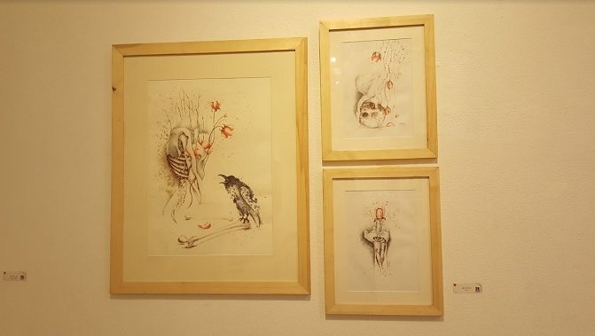
لوحة مريم رشدي شفيق - الصورة: إسماعيل فايد
الاطلاع على أعمال الفنانين الآخرين يفتح الباب أمام أسئلة بدهية عن أساليب التشكيل أو لغته أو حتى منهج التفكير.
هناك حقيقة لا يمكن الهروب منها: الفن لا يمكن عزله عن سياقه.
جماليات الفنانين الشباب في ذلك الإصدار من صالون الشباب محكومة بما أُسميه «جماليات يوسف فرنسيس»: ذلك الأسلوب المقترن بـ«ما قبل الرفائيلية» المتأخرة، التي دائمًا ما كانت في حالة صدمة مع واقعها، في مزيج من الرومانسية والكلاسيكية المستجَدة، التي تُظهِر نساء ذوات أجساد نحيفة وشفافة في حالة ذهول وحزن من قسوة الحياة.
عادةً ما تكون تلك الجماليات مرتبطة بالثقافة البصرية لهؤلاء الفنانين، وما يسمى «عادات النظر»، وإن كانت الثقافة البصرية التي تشمل مجمل الإنتاج البصري من تلفزيون وسينما وصحافة ودعاية وإعلان وأعمال فنية كذلك، لا تتجاوز تلك الرومانسية المصدومة دائمًا في واقعها الأليم، فإن تلك الأعمال «الرومانسية»، المليئة بشعور «الحب المفقود»، لهي أصدق تعبير عن واقعها بكل سذاجتها ومباشرتها.
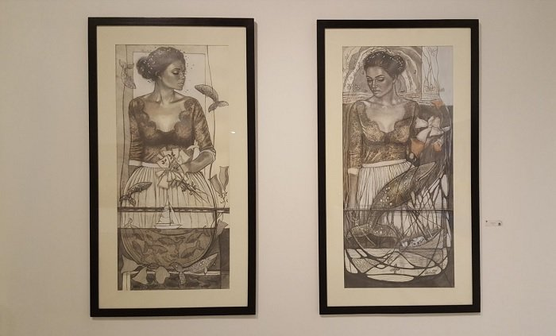
لوحة آلاء أحمد حلمي - الصورة: إسماعيل فايد
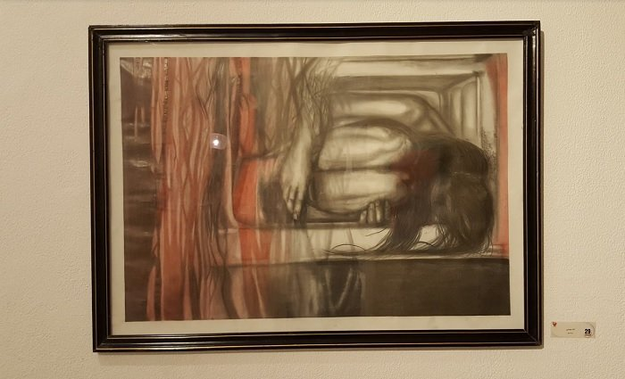
لوحة آلاء يسري محمود - الصورة: إسماعيل فايد
ليس الهدف من هذه المراجعة الذم أو القدح في الفنانين وأعمالهم، فأنا أدرك جيدًا صعوبة التفكير في عمل فني والمراحل المختلفة التي تنطوي عليها عملية الإنتاج الفني. لكن يجب علينا أن نُسائل أنفسنا: لماذا تسيطر تلك الجماليات على الفن المعاصر المنتَج عبر منظومة قطاع الفنون التشكيلية، بكل ما يعنيه ويعانيه القطاع من مشكلات مرتبطة بإدارته واستخدام موارده والتعامل معه، حتى مع وجود مشهد مستقل على الجانب الآخر من النهر، مفتوح للجمهور ولديه تراكم تاريخي تجاوز العقدين من الزمن؟
حتى إذا تجاهلنا المشهد المستقل وما يُنتَج منذ صعوده، يبقى السؤال: ألَا يستطيع أحد من هؤلاء الفنانين البحث عن أعمال فنية معاصرة من باب الفضول والاطلاع؟
ليس الهدف من السؤال مطالبة هؤلاء الفنانين بمحاكاة أعمال المعاصرين الآخرين، لكن الاطلاع على أعمال الفنانين الآخرين في حد ذاته يفتح الباب أمام أسئلة بدهية عن أساليب التشكيل أو لغته أو حتى منهج تفكيره، الذي من الممكن أن يفتح آفاقًا مختلفة تتجاوز أساليب سياق التعليم وعرض الفن في القطاع الحكومي.

لوحة أفنان سمير متولي - الصورة: إسماعيل فايد
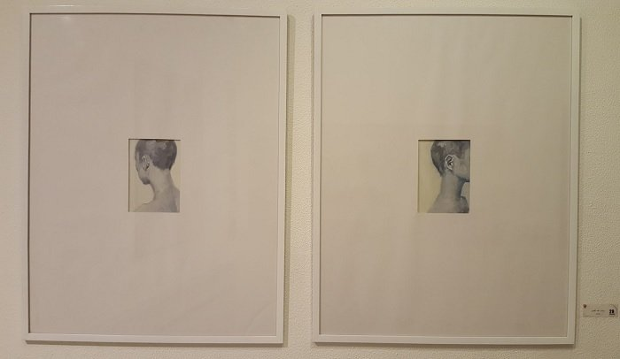
لوحة روشان أحمد القرشي - الصورة: إسماعيل فايد
المعرض امتداد لنفس المنهج والأسلوب الذي ينتهجه القطاع مع المعارض الأخرى.
باستثناء أفنان سمير متولي وروشان أحمد القرشي، اللتين قدمتا أكثر عملين مميزين تقنيًّا وجماليًّا، فإن مَن لم يقع في فخ الرومانسية المغدورة أبدى قدرًا لا بأس به من الوجودية، تراوحت بين التعبيرية (أمنية السيد أحمد، مصطفى ربيع صديق، أحمد محمود سليمان، صلاح الدين أحمد)، والتجريد في أشكاله المختلفة (فاطمة رمضان، السيد عرفات السيد «غرافيك»، بسمة بركات أبو بكر «غرافيك»، روضة نور الدين علي «غرافيك»).
ينقل ذلك الشعور عن ذاتية تتفسخ عناصرها كما تتفكك عناصر التشكيل في حالة من التوتر وعدم التوازن من ناحية، ومن السخط واليأس من ناحية أخرى، ليطابق ذلك الواقع بطريقة ما.
لعل ذلك الأسلوب أكثر تعقيدًا وصدقًا من الرومانسية المغدورة التي ميزت كثيرًا من الأعمال.
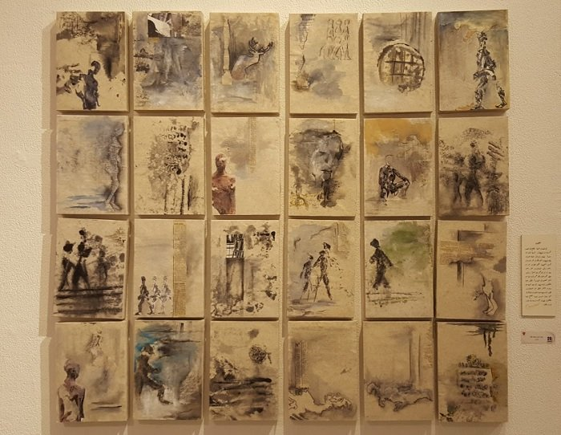
لوحة أمنية السيد محمد - الصورة: إسماعيل فايد
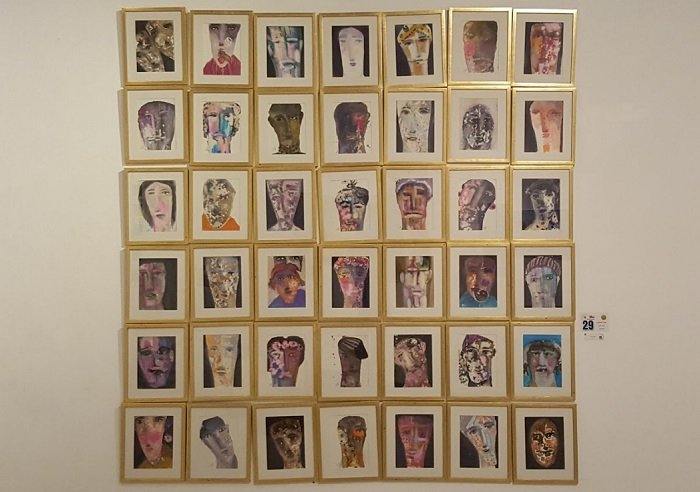
لوحة مصطفى ربيع صديق - الصورة: إسماعيل فايد
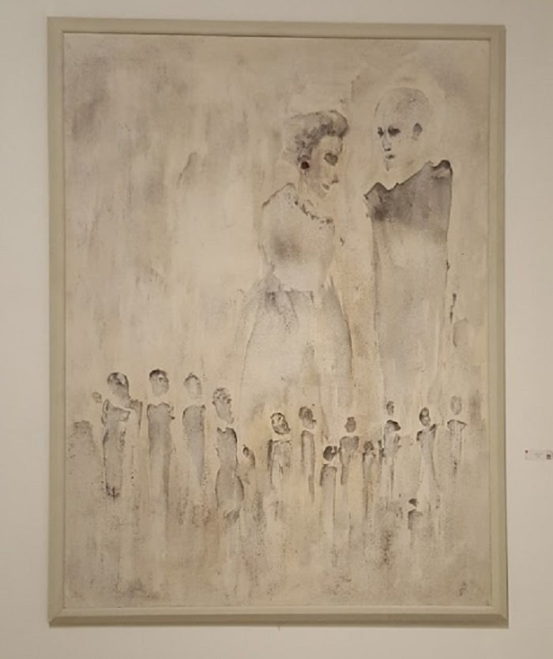
لوحة أحمد محمود سليمان - الصورة: إسماعيل فايد
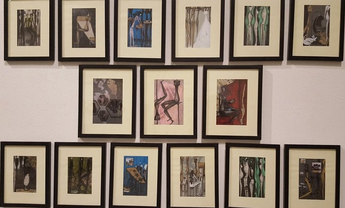
لوحة فاطمة رمضان - الصورة: إسماعيل فايد
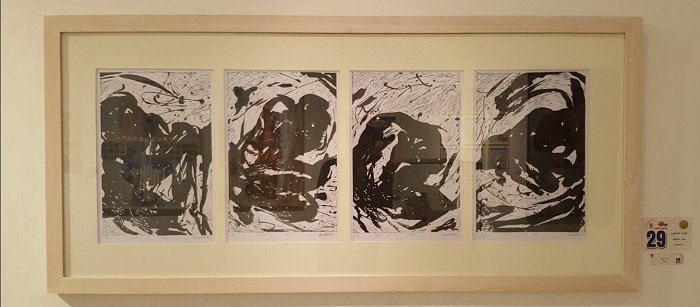
لوحة بسمة بركات أبو بكر - الصورة: إسماعيل فايد
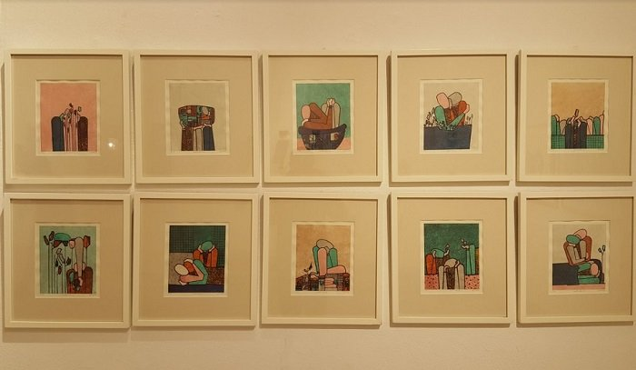
لوحة روضة نور الدين - الصورة: إسماعيل فايد
لا يعنيني سيطرة ذوقية دون الأخرى، سواء كانت ما قبل الرفائيلية أو التعبيرية، وأُدرك أن لكثير من المشاركين في الصالون تعلُّق حقيقي بأسلوب أو منهج بعينه. لكن باقتراب العام الثلاثين لصالون الشباب، يصبح لدينا سؤال: هل نجح في كسر هيمنة ذوقية معينة على شباب الفنانين التشكيليين، أم صار امتدادًا لنوعية المعارض الاعتيادية التي يقيمها قطاع الفنون التشكيلية؟
تبدو الإجابة أن المعرض، بخلاف قلة قليلة من المشاركين، امتداد لنفس المنهج والأسلوب الذي ينتهجه القطاع مع المعارض الأخرى، لتصبح الأقدمية أو موالاة النظام (انظر مقدمة كتالوغ صالون الشباب الدورة الـ27 على سبيل المثال) أو البيروقراطية الحكومية وسيطرة الأساتذة هي العناصر الحاكمة لإحدى الفرص القليلة المتاحة أمام شباب الفنانين لعرض أعمالهم على قطاع واسع من الجمهور.
يفرض علينا ذلك تساؤل عن جدوى رفض هذه الجماليات أو وصفها بأنها «قديمة» أو لا تواكب معطيات اللحظة الراهنة، بل يبدو لنا أن هذه الجماليات تجيب عن أسئلة تشغل هؤلاء الفنانين بشكل أو بآخر، وتظهر تعبيرًا صادقًا، ليس فقط عن الثقافة البصرية لأولئك الفنانين، بل أيضًا عن الأفكار والأساليب الفنية التي درسوها.
بعيدًا عن إشكاليات تعليم الفن في مصر، يبدو أن رفضنا تلك الجماليات نابع من وعي بأن هؤلاء الفنانين لم تتح لهم الفرصة للخروج من محدودية التجربة التعليمية (كلية الفنون الجميلة أو الفنون التطبيقية على سبيل المثال)، أو من سيطرة رؤية جمالية أو ذوقية خاصة بالقائمين على قطاع الفنون التشكيلية، مع الأخذ في الاعتبار أن الصالون الشباب جرى تطويره كمحاولة للخروج من تلك المحدودية وتسلطها في بادئ الأمر.